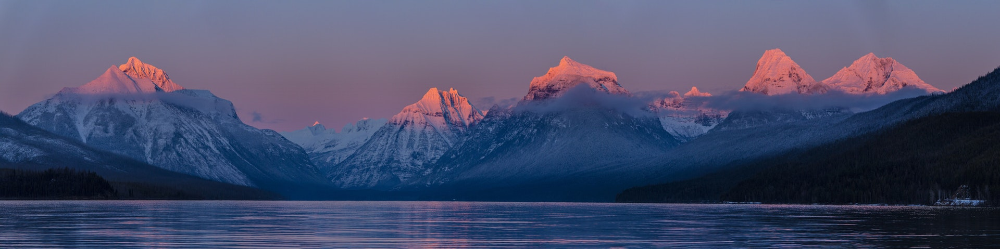

Entdecke die österreichische Urlaubsregion Vorarlberg! In unseren geführten Touren wandern wir durch idyllische Täler, erkunden traumhafte Bergseen und besteigen abenteuerliche Dreitausender. Sei dabei!

Die Vorarlberger Berge im Westen von Österreich bieten dir einzigartige Panorama inmitten spektakulärer Natur. Zahlreiche Wanderwege, für jedes Schwierigkeitslevel, urige Berghütten und gemütliche Einkehrmöglichkeiten als auch eine erstaunliche Landschaftsvielfalt an Seenlandschaften und Hochgebirgen. Unterwegs in den Vorarlberger Bergen tauchst du ein in eine unbeschwerte Welt frei von allen Gedanken des Alltags. Unsere ausgebildeten Wanderführer finden garantiert das passende Bergerlebnis für deinen perfekten Urlaub. Einen Urlaub, den du so schnell nicht vergisst. Im Sommer geht’s mit der Bergbahn direkt zur urigen Hütte oder auf einen der vielen Rundwanderwege. Auf Kräuterpfade und Themenwanderungen kannst du mehr über die Kultur und den Lebensraum vieler Tiere herausfinden. „Min Weag“ ist Vorarlberger Dialekt und bedeutet „Mein Weg“ – der bekannte Weitwanderweg führt dich auf 31 Etappen durch die gesamte Landschaft. Für Kletterfreunde locken das auf den Montafon und das 2025 Meter hohe Fellhor und die imposante Gletscherwelt der Silvretta mit ihren mächtigen Dreitausendern.
Wanderabenteuer Vorarlberg: Zwischen Montafon und Bodensee
Unterwegs in den Vorarlberger Bergen. Im Kontrast aus Seenlandschaft und Alpenregion bietet das kleine Bundesland eine großartige Auswahl an Outdoor-Erlebnissen für die ganze Familie.Hier kommt her, wer in die Schönheit der Natur eintauchen möchte. Das Montafon. Traumhafte Pisten im Winter, idyllische Plätzen inmitten der Stille der Natur und mächtige Bergketten im Sommer. Das Tal im Süden Vorarlbergs bieten alles was das Herz von Naturliebhaber schätzt. Zahlreiche Attraktionen und Outdoor-Sportarten laden zum Verweilen ein. Auf gemütliche Panoramawege kannst du mehr über die traditionelle Lebensweise der Vorarlberger Bergbauern erfahren. Kulinarische Köstlichkeiten wie die bekannten Vorarlberger Kässpätzle und der nur hier erhältlichen Spezialität „Sura Kees“ – einem milden-aromatischen Magerkäse als Teil der Vorarlberger Kultur. Für die aktiven gibt es zahlreiche Outdoor-Aktivitäten. Neben Mountainbike-Strecken und Freeride-Pisten bietet die Landschaft des Montafons Klettersteige für Einsteiger und Fortgeschrittene. Kulturell anregend und landschaftlich bezaubernd. Die Region des Bodensee im westliche Teil Vorarlbergs schätzen Kulturliebhaber. Zauberhafte Seeufer, die Nähe zu zahlreichen Bergen und die alljährlichen Bregenzer Festspiele auf der inszenierten Seebühne machen die Region Bodensee zu einem einzigartigen Urlaubsziel. Vorarlberg verbindet auf kleinem Raum eine Vielfalt an Kultur, Genuss und unberührten Landschaften, in der du zur Ruhe kommst und gemeinsam mit uns die einzigartige Welt der Alpen kennenlernst.
Geführte Alpen-Touren für jedes Schwierigkeits-Level
Für deinen Besuch in den Vorarlberger Alpen haben wir unsere fünf schönsten Bergtouren ausgewählt. Mit unseren geführten Touren findest du Angebote in unterschiedlichen Schwierigkeitslevel sowohl für Anfänger als auch für fortgeschrittene und wahre Bergprofis. Die Möglichkeit einer individuellen Tour gibt’s auf Anfrage.
Auf der richtigen Spur: Sichere Bergtouren mit top Wanderführern
Die Schönheit der Alpenregion verzaubert seit Jahrhunderten und lädt zum dabei zu zahlreichen Aktivitäten ein. Neben all den neuen Abenteuern birgt die Bergwelt auch Gefahren. Bergweltenklassifizierungen des DAV helfen dir das Schwierigkeitslevel deiner Bergroute zu erkennen. Zusätzlich solltest du dich immer über Wetter und Witterungsverhältnissen deiner Route vertraut machen. Gibt es gravierende Höhenunterschiede? Welche Ausrüstung brauche ich? Hier kommen wir zu Hilfe! Als Teil unserer geführten Wanderungen können wir dich in Puncto Sicherheit tatkräftig vorab über Ausrüstung und Beschaffenheit der Route informieren. Gerne beraten und helfen dir unsere erfahrenen Wanderführer bei der Wahl der richtigen Bergtour und bei allem weiteren.
Checkliste für Bergtouren: Das solltest du immer mit dabeihaben!
So unterschiedliche die österreichische Bergwelt ist, so unterschiedlich ist auch dein Equipment, das du brauchst. Hier findest du unsere Basis-Checkliste mit allen Dingen die du für deine nächste Erkundungstour in den Alpen brauchst.